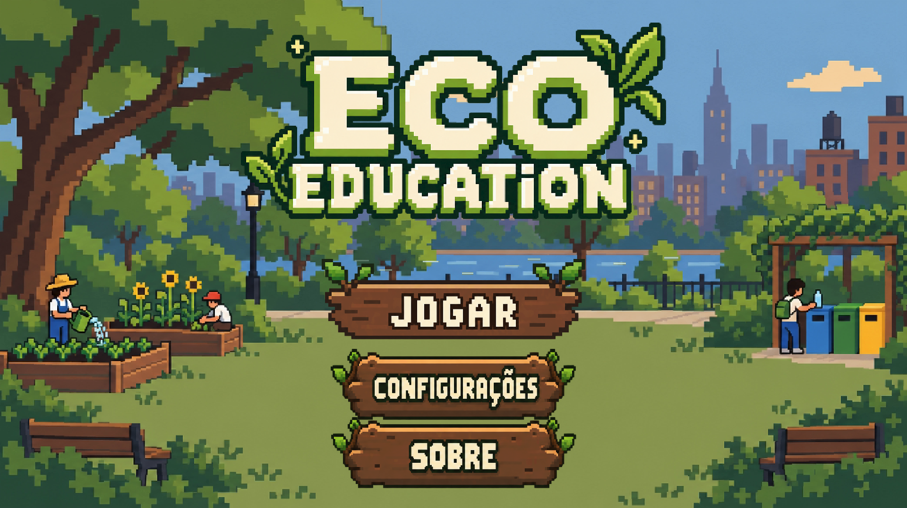

Seu indicador educativo
0 / 100
Este indicador serve para reflexão. Não mede impacto ambiental nem calcula uma pegada científica.
Cada escolha deixa uma marca no planeta. Entender o impacto ajuda a agir com mais consciência.
Ir para o quizToda escolha deixa uma marca.
O que consumimos não termina no descarte.
Os recursos do planeta têm limite.
Consumir melhor também é transformar.
0 / 100
Este indicador serve para reflexão. Não mede impacto ambiental nem calcula uma pegada científica.

Um jogo educativo 2D sobre consumo responsável e ODS 12. Explore como as escolhas do dia a dia se conectam aos recursos do planeta.
Jogar Eco-Education